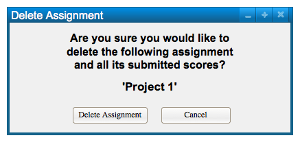

To delete an assignment, right-click on the assignment title and a dropdown menu will appear, shown in Figure 1.
Figure 1: Dropdown appears under title of assignment
The options 'Modify Assignment' and 'Delete Assignment Appear'. The user will click on the 'Delete Assignment' so that a dialog appears, shown in Figure 2.

Figure 2: Delete Assignment Dialog
The user will be asked to confirm that they would like to delete the assignment and all submitted scores, shown in Figure 2. As an example, 'Project 1' has been chosen to be deleted.

Figure 3: Updated Instructor View After Delete
Figure 2 shows the updated instructor view after deleting 'Project 1'.